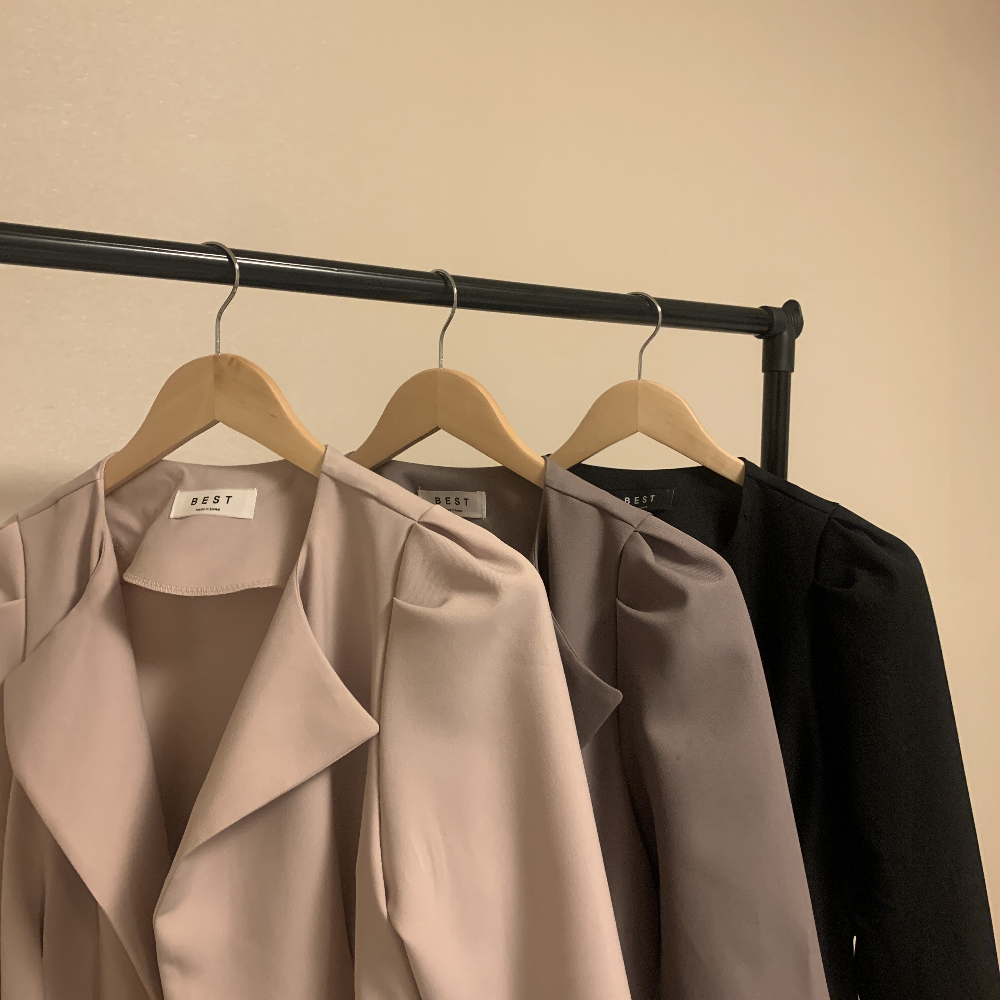

- outer
- top
- bottom
Hello Web
Welcome to Flora shopping mall.

bottom
Here at Bottom 10 Headquarters, located in a tunnel of the abandoned Dallas warehouse where a bunch of people in suits just showed up suddenly digging through boxes for old Big Eight logo stuff, we have always maintained that the greatest aspect of penning the Bottom 10 comes in the reward of seeing a longtime regular team finally do what they'd always dreamed of: win. That's why on Friday night, when the then-top/bottom-ranked Kansas Jayhawks won for the first time in 679 days, I ran out into the parking lot of my hotel and tried to tear down a Bradford pear tree like it was a Memorial Stadium goalpost.